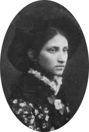
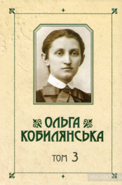
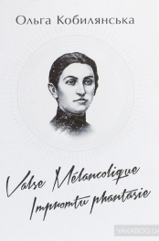
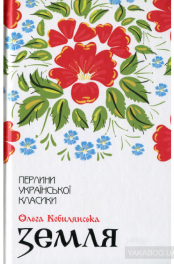
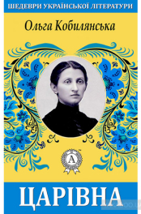
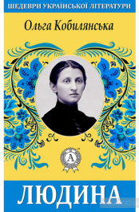
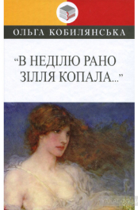

Ольга Кобилянська
Модерніська письмениця /
феміністка / прозаїк /
Кобилянська Ольга Юліанівна
| Псевдонім: | Гірська Орлиця |
| Народилася: | 27 листопада 1863 Ґура-Гумора, Сучавський повіт |
| Національність: | українка |
| популярні: | ‘Людина’(1886), ‘Царівна’(1896), ‘Ніоба’(1905), ‘Земля’(1895-1901), ‘Природа’(1887) |
| Цікавий факт: | одна із перших феміністок україни |
| Померла: | 21 березня 1942 (78 років) Чернівці |
Майбутня письмениця з дитячих років знала не тільки українську, а й польську та німецьку мови, якими говорили в її родині.
Перші літературні твори О. Кобилянської, написані німецькою мовою ще без чіткого уявлення, “що значить слово “література”, припадають на початок 80-х рр. (“Гортенза, або нарис з життя однієї дівчини”, “Доля чи воля?”). Ранні неопубліковані твори Кобилянської (“Гортенза”, “Видиво”, “Людина з народу” та ін.)
Німецька мова, як і німецька культура, відіграли позитивну роль у житті й творчості Кобилянської. Вони, як слушно зауважила Леся Українка, допомогли Кобилянській вийти в широкий світ загальнолюдської культури. Але для утвердження Кобилянської як української письменниці необхідно було глибоко знати не лише українську мову, а й надбання української літератури. Цю істину вона все ясніше почала усвідомлювати і з кінця 80-х років наполегливо вивчає культурну спадщину свого народу, виявляє дедалі більший інтерес до його життя.
Тоді ж вона бере активну участь у так званому феміністичному русі, який зачепив чимало наболілих питань, над якими замислювалися представники передової інтелігенції. Ставши у 1894р. однією з ініціаторок створення “Товариства руських жінок на Буковині”, Кобилянська обгрунтувала мету цього руху в брошурі “Дещо про ідею жіночого руху”. Письменниця порушила питання про тяжке становище жінки “середньої верстви”, активно виступила за рівноправність жінки й чоловіка, за її право на гідне людини життя
У 1899 році у Львові вийшла перша збірка новел Кобилянської під назвою «Покора». Письменниця стає відомою і популярною, нею зацікавлюється Леся Українка.
На початку 90-х років О. Кобилянська захопилася філософією Ф. Ніцше, яка імпонувала їй антиміщанським спрямуванням, афористичною заокругленістю думок, за що їй довго докоряли «ніцшеанством».
У другій половині 90-х років у творчій біографії Кобилянської значну роль відіграв О. Маковей – перший видавець, глибокий дослідник і популяризатор її творів.
Маковей перший визначив одну з найхарактерніших рис індивідуального стилю Кобилянської – органічне поєднання реалістичного і романтичного способів.
- Ольга Кобилянська закінчила 4 класи школи, а свій високий рівень знань досягла самостійно.
- Юна Оля непогано малювала (потім закинула, розуміючи, що їй не вистачає школи), мала прекрасний музичний слух (в 8 років лише два місяці вчилася музиці, з тих пір відігравала твори на слух, прослухавши всього два рази), обожнювала верхову їзду, грала в домашніх спектаклях. Але головною пристрастю Ольги було читання.
- Хотіла навіть стати професійною актрисою, але віддала перевагу літературі.
- Ольга Кобилянська мала прийомну дитину (позашлюбну доньку одного із братів) і на старості, коли мала сили, то розповідала чудові казки своїм онукам. Письменниця мала добру пам’ять і могла декламувати твори із "Кобзаря" кілька годин.
- Ольга Кобилянська дуже кохала Йосипа Маковея, але той не відповів їй тим же почуттям. За давньою легендою, дівчина, яка знайде едельвейси, буде дуже щасливою і матиме міцну та велику родину. Ольга маленькою дівчиною на крутих схилах назбирала ці квіти, але повір’я так і не справдилося. Але цей гербарій був завжди з нею.
- Вона мала і шкідливі звички – дівчина курила
- Коблилянська сама заробляла собі на життя, на власні кошти купила будинок (чим неймовірно пишалася). У 70 років вона стала фанаткою німого кіно. Тоді, у 30-х роках вона мешкала в Чернівцях і не пропустила жодної кіноновинки. Ходила зі своїми подругами і сама за них платила.
- На формування феміністичних поглядів Кобилянської вплинула засновниця українського фемінізму Наталя Кобринська;
- Завдяки впливу друзів натхненна Ольга усвідомила себе саме українською письменницею

Зібрання творів у 10 томах. Том 3. Німецькомовні повісті
У 3-му томі уперше публікуються німецькомовні повісті Ольги Кобилянської, написані в ранній період творчості "Hortense, oder Ein Bild aus einem Madchenleben" ("Гортенза, або нарис з життя однієї дівчини") (1880), "Schicksal oder Wille" ("Доля чи воля") (1883)...


Земля
Цьому творові притаманні глибокий психологізм та символізм у розкритті образів. Так, Михайло і Сава — протилежні психологічні типи. Марійка та Івоніка — уособлення цінностей народної моралі, Сава і Рахіра — втілення духовної деградації, образ Анни передає трагедію шляхетної, чутливої душі в жорстоких обставинах тогочасного сільського життя.



В недiлю рано зiлля копала...
До збірки входять надзвичайно поетичні та емоційні твори Ольги Кобилянської, пронизані мотивами вальсу й романтичної пісні-балади, що надають їм ліричної схвильованості, допомагають глибше проникнути у внутрішній світ героїв і задуматись над вічною загадкою жіночої душі. Вірність і зраду...
Ольга Кобилянська і кіно
Ольга Кобилянська входить в число найвідомих українських письменників та людей, що почали цікавитися кіном на початку його винекнення. Вона запрошувала подруг у кінотеатр, не пропускаючи ні одної презентації нового фільму. Цікаво знати, що вона не зважаючи на всі стереотипи у того часному суспільстві, зі свого гамаця платила за подруг. Авторка на стільки була зацікавлена кіномистецтвом, що навіть написала кілька своїх сценаріїв. На жаль, їх екранізували уже після смерті Ольги Кобилянської.
«Земля»... дає гарну і широку картину життя — тієї «влади землі», що так позначилася на хліборобові, на його психіці й побуті, на його вдачі й переживаннях»
С. Єфремов
«Я просто зачарований Вашою повістю — все: і природа, і люди, і психологія їх — все це робить таке сильне вражіння, все це виявляє таку свіжість і силу таланту, що, од серця дякуючи Вам за пережиті емоції, я радів за нашу літературу»
М. Коцюбинський
«Найвидатнішим з її творів є... «Земля»... «Земля», крім літературної та мовної вартості, матиме тривале значення ще й як документ способу мислення нашого народу...»
І. Франко
«Ми й сьогодні приходимо до творчості Кобилянської по естетичну насолоду і знання жіночого характеру, адже ж вона створила цілу енциклопедію жіночої душі»
С. Павличко